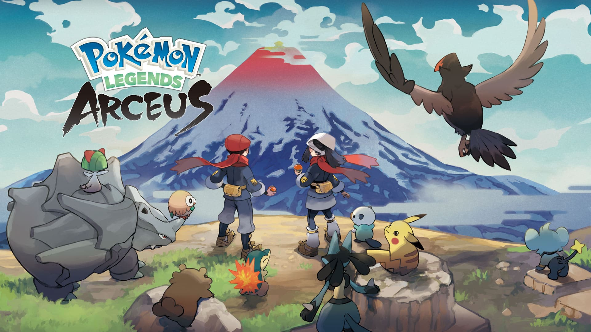
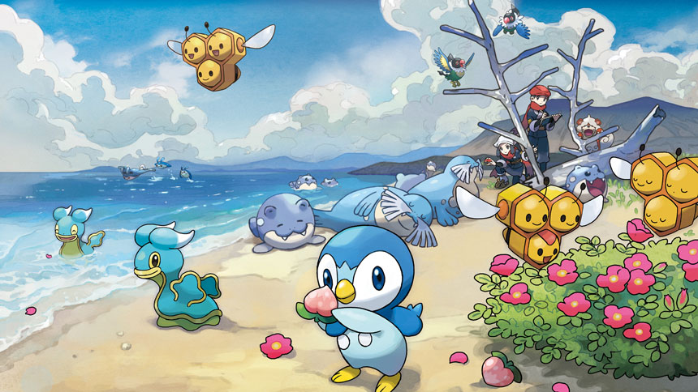

LEGENDS OF
POKÉMON ARCEUS
LA ÚLTIMA Y NOS VAMOS
No queremos enfrentarnos a un duodécimo batacazo y otra rotura de corazón por parte de los de Game Freak pero ESTO PINTA MUY BIEN
Han pasado ya más de 20 años desde que el primer juego de cierta saga de coleccionar bichos de bolsillo llegara a España. Si no sabes de lo que te hablo y tus primeros recuerdos de Pokémon son ya en tres dimensiones, disfruta de tu juventud. Si por el contrario el pixel es tu amigo, reconoces más de 800 pokémon, tienes tres dosis de la vacuna de los omicrones y un vuelo a Turquía para “una cosa”, muchos ánimos de mi parte.
No nos vayamos por las ramas. Pokémon.Fiebre absoluta y uno de los juegos más rentables de la industria. ¿Qué nos impulsa a repetir la misma fórmula una y otra vez? ¿Cuánto tiempo ha vivido Pokémon de las rentas y de una inercia que desafía testarudamente todas las leyes de la física?
La realidad es que nadie lo sabe. Y, sin embargo y sin que nada lo remedie, ahí estamos cada generación, cada color, cada nueva piedra preciosa o elemento de la tabla periódica que toque.
Probablemente el factor nostalgia tenga mucho que ver en todo esto. Hay un elemento de refugio en la historia del joven aspirante a campeón. Repetir esa rutina como si fuera un mantra, reconfortante en su previsibilidad. Coleccionar medallas, entrenar a tu compañero inicial, ir completando la Pokédexde la región de turno. Esas cosas.
Pero todo tiene un desgaste. Algunos hemos llegado a Espada y Escudo con cierta sensación de, hablando en (Pokémon) plata, pereza. De, mire usted, me tomo esta copa y me marcho a casa, que ya tengo una edad. Uno ya no está para trotes (ni para vuelos ni buceos) y la resaca de hiperpociones ya es muy puñetera en la treintena.
Menos mal que Nintendo ha pensado en nosotros, los más viejos del lugar, los que pusimos la primera piedra.
Leyendas Pokémon: Arceus ha llegado como el potencial salvador de la franquicia y, por qué no decirlo, de nuestra salud mental. Tiempo habrá para debatir si su infame aspecto gráfico y artístico es un mal menor a cambio de ese aire fresco que tanto necesitaba Pokémon. En todo caso, ventilar era necesario y el futuro es más prometedor tras nuestro periplo en Hisui.
Ahora solo falta que la libertad que nos ha traído Leyendas Pokémon: Arceus no sea solo un espejismo en mitad del desierto creativo de Game Freak . Porque queremos más. Va, venga, la penúltima y nos vamos.
Review del gran Alber Romero